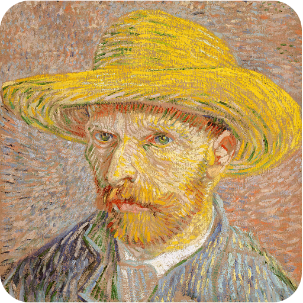
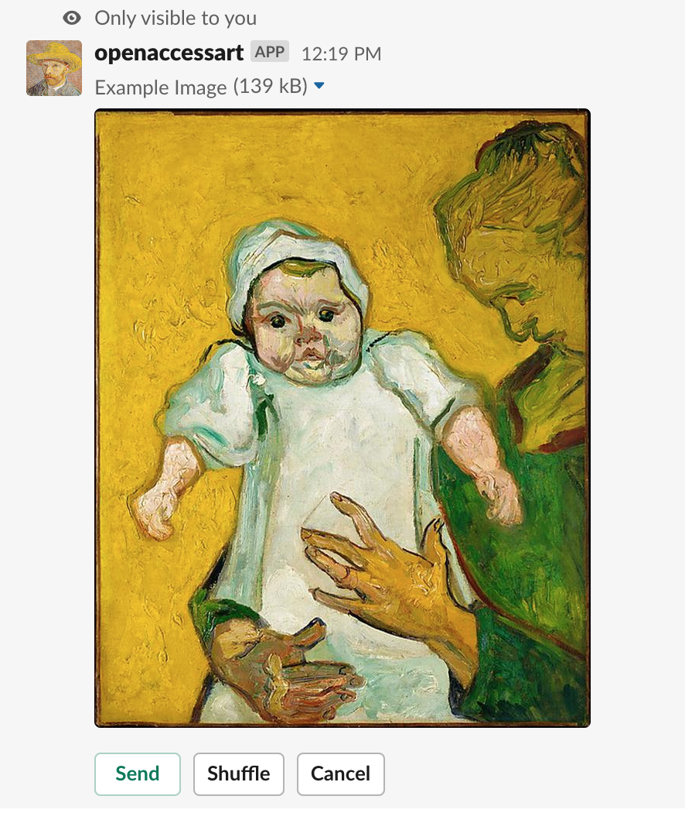
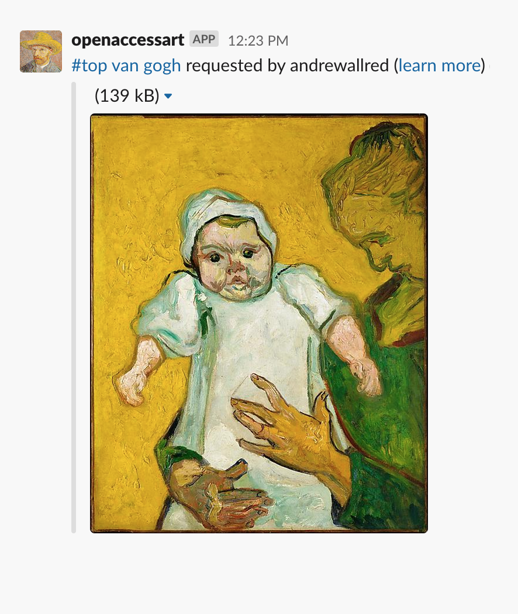

Open Access Art Bot
Open Access Art Bot brings the world's Open Access art to your Slack workspace.
With works ranging from 5000 B.C. to (almost) the present day, you'll find inspiration, amusement, and be reminded of the power of art across time and culture.

How to use
Use the /oa command in Slack to search for and share artworks, for example
/oa van gogh, and shuffle to select the work of your choice.

